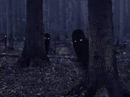

Hola estimado lector de esta historia, necesito su ayuda tal y como dice este titulito de aca arriba. Me estan pasando cosas raras desde que me mude a la casa de donde estoy escribiendo, a veces encuentro cosas fuera de lugar , asi como tazas de cafe en el patio o en el techo. es algo muy raro pero tolerable, al menos eso era... esta casa tiene un patio de casi media hectaria que conecta con un bosque. esto siempre fue una idea que me gusto mucho, tener una casa que conecte con un bosque es genial, el problema fue hablarle a mi vecina. me conto que en la reja que limita mi casa y el bosque ocurrió una tragedia, mi vecina es una anciana que se dice que esta algo loca. me conto que una pareja que vivio ya hace muchos años aseguraba poder ver cosas en el bosque tales como tortugas de 6 patas y con dientes cubriendole la cabeza, perros prendidos fuego, gatos que en vez de ojos tenían tenazas y duendecillos que supuestamente le movian las cosas de lugar. yo nunca le conte que me pasaba lo mismo con las cosas y eso fue lo que mas me llamo la atención. esa noche dormi mal, podia escuchar gritos como de un mujer y llantos de un perro. La mañana siguiente fui a hablar con la vecina y le lleve 3 saquitos de té de manzanilla como regalo. Ella me conto que luego de que la pareja empiece a contar lo que le estaba pasando, fue asesinada misteriosamente en la reja que limita el bosque. a partir de ese momento todas las personas que vivieron en esa casa escucharon cosas raras y casi todos se fueron. La unica persona que no se fue termino como otra misteriosa victima de la casa. la anciana dice poder recordar el grito que el hombre pego antes de morir y dice que lo recordara por el resto de su vida. "el grito de la muerte nunca se olvida" obviamente me recomendo que me fuera, pero yo no queria, yo no creo en fantasmas o monstruos asi que pense que la anciana me queria molestar, quiza por eso tantas personas se habrian mudado, quiza ella hacia los ruidos y ademas se me hacia tonta la idea de abandonar la casa por las historias de una vieja loca asi que escuche todo lo que me dijo y seguidamente me fui de vuelta a mi casa. estuve ordenando todo lo de la mudanza. en un momento mire hacia el bosque y vi a una pareja medio rara. vestian pijamas y estaban mirando la casa lo primero que me imagine fue la historia de la vieja loca asi que me asuste, pero al mismo tiempo pense que podria ser algna pareja normal que simplemente esta de picnic
Ahora es cuando llegamos por fin al presente
ahora si necesito tu ayuda! estaba dormido cuando escuche un sonido muy fuerte en la reja. gracias a la lunallena puedo ver animales medio deformes
y raros escucho una pareja en la cocina en el 1er piso. yo estoy durmiendo en el de arriba. <
que deberia hacer?